금형기능사 (2003-03-30 기출문제)
1과목: 임의구분
1. 전단 저항이 가장 큰 일감의 지지 방법은 다음 중 어느것인가?
- 일감을 양면에서 지지한다.
- 일감을 자유 지지한다.
- 한쪽을 지지한다.
- 반쪽을 지지한다.
(정답률: 83%)

2. 드로잉 가공의 성형성을 나타내는 척도로 사용되는 것은?
- 드로잉률
- 두께비
- 드로잉 클리어런스
- 드로잉 가공 일량
(정답률: 83%)
3. 다음 중 기계식 프레스에 사용되는 기구의 종류에 속하지 않는 것은?
- 마찰 기구
- 너클(knuckle)기구
- 유압 기구
- 크랭크(crank)기구
(정답률: 42%)
4. 다음 중 프레스 기계에서 연속적으로 가공할 소재를 이송시키면서 여러 공정을 거쳐 하나의 제품을 가공하는 금형은?
- 전단 금형
- 굽힘 금형
- 드로잉 금형
- 순차이송 금형
(정답률: 87%)
5. 소재를 표면에 균열없이 구부릴 수 있는 굽힘반지름을 무엇이라 하는가?
- 한계 굽힘 반지름
- 최대 굽힘 반지름
- 허용 굽힘 반지름
- 최소 굽힘 반지름
(정답률: 50%)
6. 프레스 가공 중 전단가공에 속하지 않는 것은?
- 피어싱 가공
- 코이닝 가공
- 트리밍 가공
- 블랭킹 가공
(정답률: 46%)
7. 두께 2 mm의 연강판으로 Φ 50 mm의 원판을 블랭킹 하려고 하면 전단력은? (단, 전단저항은 32 kgf/㎜2로 한다.)
- 약 5.3 ton
- 약 10.1 ton
- 약 15.2 ton
- 약 20.3 ton
(정답률: 54%)
8. 여러가지 허프(HERF)장치를 사용하여 초고속으로 행하는 허프(HERF)가공에 속하지 않는 가공법은?
- 폭발 성형법
- 액중 방전 성형법
- 전자 성형법
- 초음파 성형법
(정답률: 53%)
9. 프레스 작업전 안전 확인 사항이 아닌 것은?
- 프레스 구조 및 사양 숙지
- 방호장치 기능상태 확인
- 금형의 조립 및 부착상태 확인
- 전동기 및 조작기기 이상유무 확인
(정답률: 53%)
10. 블랭크 두께의 변화가 없으며 부분적인 굽힘과 드로잉이 가공초기에 이루어지고 요철(凹凸)이 서로 반대로 되는 가공은?
- 코이닝(coining)
- 인텐딩(intending)
- 엠보싱(embossing)
- 노칭(notching)
(정답률: 54%)
11. 사출금형에서 상하 2장으로 구성되고, 이 사이에 이젝터 핀, 리턴핀 등을 고정시켜 상하로 작동시켜 성형품을 빼 내는 기구는?
- 스톱핀
- 이젝트 플레이트
- 러너 로크핀
- 스프루 로크핀
(정답률: 74%)
12. 금형의 이젝터 장치를 가동시키기 위한 성형기의 부품은?
- 로케이트링
- 스톱핀
- 이젝터로드
- 서포터
(정답률: 72%)
13. 다음은 사출금형 설치시의 냉각수 선정 및 배관 공사에서의 유의점이다. 거리가 먼 것은?
- 지정한 관경을 사용한다.
- 수질이 좋은 것을 이용한다.
- 적당한 수량의 고온의 물이 좋다.
- 급수부에는 스톱 밸브를 부착한다.
(정답률: 82%)
14. 사출금형은 성형품의 형상을 부여하고 구체적인 치수를 유지하기 위한 장치이며, 주요 구성은 (①) 와 (②)로 이루어진다. 다음중 ①과 ②의 올바른 내용은?
- 다이(die) 와 펀치(punch)
- CAD 와 CAM
- 프레스(press) 와 사출(mould)
- 코어(core) 와 캐비티(cavity)
(정답률: 70%)
15. 중앙에 구멍이 있는 보스나 둥근 원통모양의 성형품을 금형으로부터 빼내는데 적당한 이젝터는?
- 핀 이젝터
- 스트리퍼 플레이트 이젝터
- 각핀 이젝터
- 슬리브 이젝터
(정답률: 48%)
16. PVC 성형품을 살두께 6mm로 사출코자 한다. 표준게이트를 사용한다면 게이트 깊이는 얼마로 하는 것이 적당하는가? (단, PVC의 수지상수는 0.9 이다.)
- 4.4 mm
- 5.4 mm
- 6.4 mm
- 7.4 mm
(정답률: 66%)
17. 플라스틱 수지의 공통된 성질 중 장점이 아닌 것은?
- 가볍고 강한 제품을 얻을수 있다.
- 열 및 전기 절연성이 좋다.
- 투명한 것이 많고 착색이 용이하다.
- 열에 강하고 산, 알칼리, 기름, 약품 등에 약하다.
(정답률: 76%)
18. 주로 가동측 형판에 고정되어 있으며 고정형과 가동형을 정확하게 맞추기 위한 안내 역할을 하는 핀은?
- 스프루 로크 핀
- 가이드 핀
- 이젝터 핀
- 리턴 핀
(정답률: 71%)
19. 3매 구성 금형에서 러너 스트리퍼 플레이트의 설치 목적은?
- 스프루 및 러너를 성형품과 분리하여 빼내기 위하여
- 핀 자국이 없이 러너를 빼내기 위하여
- 성형품을 빼내기 위하여
- 원형이나 사각형 성형품을 빼내기 위하여
(정답률: 55%)
20. 나사가 있는 성형품을 금형으로부터 빼내는 방법이 아닌것은?
- 고정 코어 방법
- 분할형에 의한 방법
- 경사 캠에 의한 방법
- 회전 기구에 의한 방법
(정답률: 45%)
2과목: 임의구분
21. 다음은 연삭숫돌 장치할 때의 주의사항이다. 이 때 해당되지 않는 것은 어느 것인가?
- 숫돌 장치전 반드시 음향검사를 한다.
- 플랜지의 외경은 숫돌 외경의 1/3 이하 이어야 한다.
- 숫돌구멍과 축과의 틈새는 0.1∼0.15㎜ 정도로 한다.
- 숫돌과 플랜지를 직접 접촉시키면 좋지 못하다.
(정답률: 53%)
22. 사인바(sine bar)로 각도를 측정할때 몇 도를 넘으면 오차가 많게되는가?
- 10°
- 20°
- 30°
- 45°
(정답률: 68%)
23. 금형재료의 요구 조건이 아닌 것은?
- 열처리가 용이하며 열처리에 의한 변형이 적을 것
- 내마모성이 적고 또 적당한 내열성을 가질 것
- 가공성이 양호할 것
- 조직이 균일하고 핀홀 그밖의 내부 결함이 없을 것
(정답률: 66%)
24. 코울드 호빙에 관한 설명이다. 가장 알맞는 항은?
- 금형의 크기, 모양, 깊이 등에 큰 제약을 받지 않는 다.
- 단위당 압축하중이 적으므로 소형 프레스로 작업이 가능하다.
- 가공에 대한 섬유조직 때문에 변형이 잘된다.
- 조각이 얕고 복잡한 무늬를 갖는 금형에 적당하다.
(정답률: 57%)
25. 바이스(vise)의 종류를 크게 어떻게 분류하는가?
- 수직식과 만능식
- 수직식과 수평식
- 수동식과 유압식
- 수동식과 자동식
(정답률: 63%)
26. 치공구를 사용함으로서 얻는 장점이 아닌 것은?
- 공차내로 제품을 가공할 수 있다.
- 미숙련공도 작업할 수 있다.
- 가공중 제품의 변형을 억제할 수 있다.
- 소량생산에서도 경제적이다.
(정답률: 53%)
27. 모방 밀링 머신에서 변위를 검지하고 구동부와 제어부를 경유하여 지령을 보내는 역할을 하는 것은?
- 모델
- 커터
- 픽 피드
- 트레이서와 필러
(정답률: 59%)
28. 일반적으로 금형이 파손되는 가장 큰 원인은?
- 열처리 불량
- 설계 불량
- 과도한 연마
- 무리한 사용 조건
(정답률: 56%)
29. 다음 중 금형을 파손시킬 수 있는 요인으로서 금형의 사용조건의 잘못으로 보기 어려운 것은?
- 순간적인 과하중
- 잔류응력에 의한 미세 균열
- 부적절한 틈새와 정렬 상태
- 과도한 사용으로 인한 응력 집중
(정답률: 59%)
30. 설계 과정에서 불가피하게 금형에 예리한 모서리가 있거나 두께의 변화가 급격한 경우, 금형의 수명이 단축되거나 열처리시에 균열을 초래할 수 있다. 대책으로 적절한 것은?
- 금형재료로 유냉 경화형 강을 선택한다
- 금형재료로 수냉 경화형 강을 선택한다
- 금형재료로 공냉 경화형 강을 선택한다
- 담금질에서 유냉, 공냉을 반복한다
(정답률: 50%)
31. 일정한 속도로 작동되고 최대하중 또는 제한하중 즉, 기계의 용량을 초과하는 하중에 대해서는 프레스의 작동이 정지되며 조절가능한 전 행정및 속도에 걸쳐 일정한 하중으로 소재에 큰에너지를 전달할수 있는 특징이 있는 프레스는?
- 기계프레스
- 나사프레스
- 유압프레스
- 수동프레스
(정답률: 61%)
32. 기계가공후 일감에 생기는 거스러미는 다음중 무엇으로 제거해야 안전한가?
- 줄
- 사포
- 바이트
- 스크레이퍼
(정답률: 77%)
33. 다음 중 안전보호구에 해당되지 않는것은?
- 운동화
- 안전모
- 보안경
- 보호장갑
(정답률: 74%)
34. 선반에서 지름이 50mm의 연강을 세라믹으로 300m/min의 절삭속도로 가공할 때 회전수는?
- 850rpm
- 1910rpm
- 3820rpm
- 4000rpm
(정답률: 75%)
35. CNC선반 작업에서 일반적으로 하지 않는 작업은?
- 기어가공
- 나사가공
- 원호가공
- 테이퍼가공
(정답률: 71%)
36. 합금주철에 0.25∼1.25% 정도 첨가하면 흑연을 미세화 되게하고, 강도, 경도 내마멸성 등이 증대되며, 두꺼운 주물의 조직을 균일화 시키고, 흑연화를 방지하는 원소는?
- 몰리브덴(Mo)
- 바나듐(V)
- 크롬(Cr)
- 티탄(Ti)
(정답률: 63%)
37. 마그네슘(Mg)에 관한 다음 사항중 올바르지 않은 것은?
- 비중이 1.74 로서 실용금속중 가장 가볍다.
- 습한 공기에서는 표면이 산화마그네슘이나 탄산마그네슘으로 되어 이것이 내부의 부식을 방지한다.
- 절삭가공시 절삭열로 인하여 깎은 부스러기가 연소할때도 있다.
- 알칼리성이 나쁜 편이나 내산성이 좋아 바닷물에 대하여 강하다.
(정답률: 56%)
38. 비틀림 모멘트 5000 ㎏f.㎝, 회전수 250 rpm인 전동축은 몇 ㎾ 힘을 전달할 수 있는가?
- 1.3
- 1.7
- 12.8
- 17.4
(정답률: 45%)
39. 레디얼 볼 베어링 #6200의 안지름은?
- 10 mm
- 12 mm
- 13 mm
- 15 mm
(정답률: 77%)
40. 시계용 스프링, 완구용 스프링 등은 스프링의 어떤 기능면에서 이용한 것인가?
- 충격에너지를 흡수하여 완충, 방진을 목적으로 이용한 것
- 탄성 변형한 스프링의 저축에너지를 이용한 것
- 스프링에 가해지는 하중과 신장의 관계로 부터 하중을 측정하는데 이용한 것
- 스프링에 가해지는 하중을 조정하는데 이용한 것
(정답률: 49%)
3과목: 임의구분
41. 웜 기어의 특징으로 옳지 않은 것은?
- 전동 효율이 낮다.
- 고속 회전에 적합하다.
- 감속비를 크게 취할 수 있다.
- 역회전 방지장치로 사용된다.
(정답률: 46%)
42. 아래 그림에서 응력집중 현상이 일어나지 않는 것은?
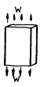
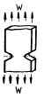
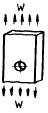
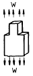
(정답률: 61%)
43. 수기가공에서 사용하는 줄, 쇠톱날, 정 등은 주로 무슨강으로 만드는가?
- 기계구조용 탄소강
- 주강
- 탄소공구강
- 고속도강
(정답률: 69%)
44. 6.4 황동에 Fe 1‾2% 정도를 첨가한 합금을 무엇이라고 하는가?
- 델타메탈(delta metal)
- 애드미럴티 황동(admiralty brass)
- 네이벌 황동(naval brass)
- 주석 황동(tin brass)
(정답률: 62%)
45. 경도가 가장 큰 주철은?
- 얼룩 주철
- 페라이트 주철
- 반주철
- 백주철
(정답률: 60%)
46. 주철에 함유되어 있지 않은 원소는?
- 규소
- 구리
- 망간
- 황
(정답률: 57%)
47. 구리(Cu)와 주석(Sn)의 합금은?
- 황동
- 청동
- 베어링 합금
- 인청동
(정답률: 78%)
48. 기어 전동의 특징을 설명한 것이다. 잘못 설명한 것은?
- 큰 동력을 전달할 수 있다.
- 속도비가 일정하다.
- 감속비가 크다.
- 충격에 강하다.
(정답률: 60%)
49. 다음 중 초경합금의 종류 중 틀린 것은?
- WC - Co계 합금
- WC - TaC(NbC) - Co계 합금
- WC - TiC - TaC(NbC) - Co계 합금
- WC - TiC - Cr계 합금
(정답률: 57%)
50. 직경이 6 cm인 원형단면에 3000 ㎏f의 인장하중이 작용할때 이 봉에 발생하는 인장응력(㎏f/㎝2)은 약 얼마인가?
- 53.6
- 87.5
- 106.1
- 117.3
(정답률: 45%)
51. 다음 중 굵은 실선 또는 가는 실선의 용도가 아닌 것은?
- 외형선
- 파단선
- 절단선
- 치수선
(정답률: 55%)
52. 다음 구멍과 축의 기호 중에서 아래 치수 허용차가 0 인 기호는?
- H
- h
- G
- g
(정답률: 66%)
53.
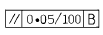
로 표시된 기하 공차의 올바른 해독은?- 기준 B의 100㎜에 대한 평면도 허용값을 나타낸다.
- 평행도가 기준 B에 대하여 지정길이 100㎜에 대하여 0.⑤㎜의 허용값을 나타낸다.
- 직각도가 기준 B에 대하여 지정길이 100㎜에 대하여 0.⑤㎜의 허용값을 나타낸다.
- 원통도가 기준 B에 대하여 지정길이 100㎜에 대하여 0.⑤㎜의 허용값을 나타낸다.
(정답률: 82%)
54. 보기의 3각법으로 그린 평면도와 우측면도가 올바른 경우 정면도에 누락된 선을 보완한 것으로 가장 적합한 것은?
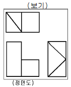
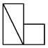
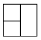
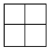
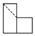
(정답률: 55%)
55. 입체도의 화살표 방향 투상도로 가장 적합한 것은?
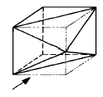
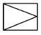
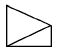
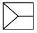
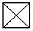
(정답률: 77%)
56. 보기의 물체를 정투상법에 의하여 나타낸 것 중에서 틀린것은?
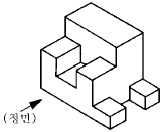
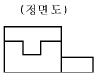
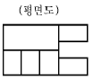
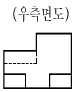
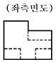
(정답률: 62%)
57. 입체도를 제3각법으로 그린 투상도로 가장 적합한 것은?
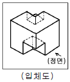
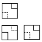
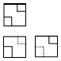
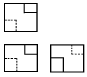
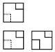
(정답률: 72%)
58. 가공 방법의 표시방법 중 M 은 어떤 가공 방법인가?
- 선반 가공
- 밀링 가공
- 평삭 가공
- 주조
(정답률: 81%)
59. 다음은 도면에 사용하는 치수보조기호를 설명한 것이다. 틀린 것은?
- □ : 정사각형의 한변의 길이
- Sφ: 구의 지름
- R : 반지름
- C : 30° 모떼기
(정답률: 81%)
60. 베어링 호칭이 62⑤일 때 안지름은 얼마인가?
- 5
- 15
- 25
- 50
(정답률: 80%)